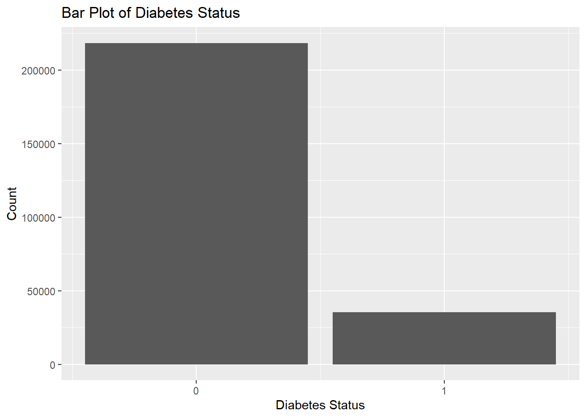
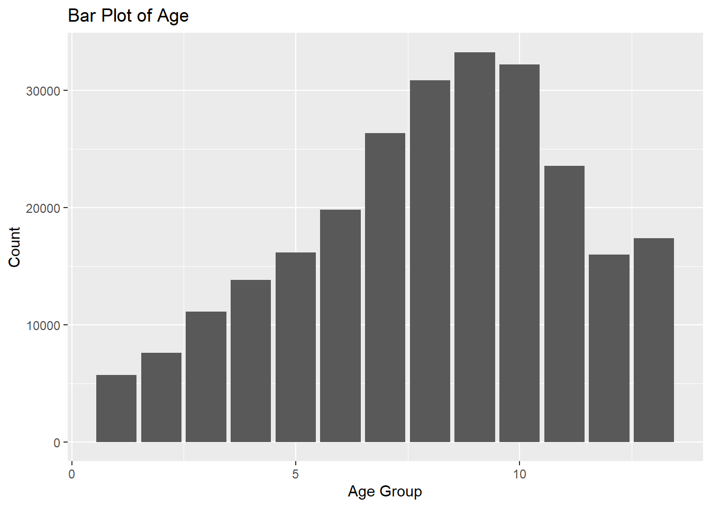
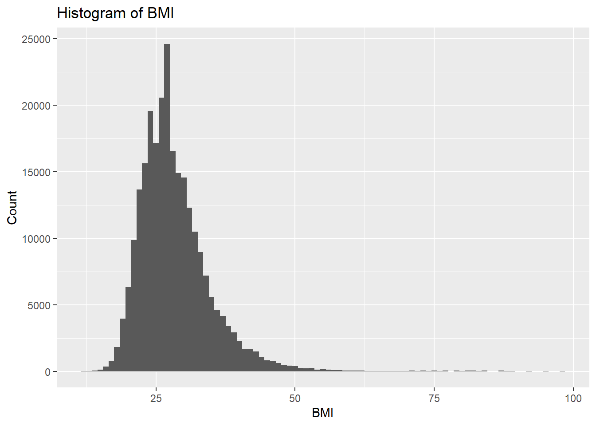
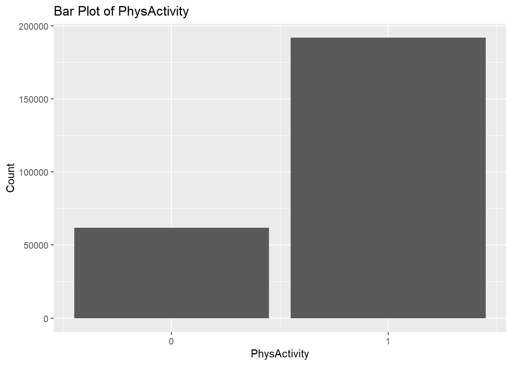
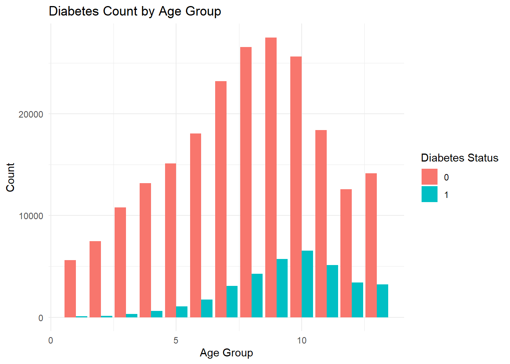
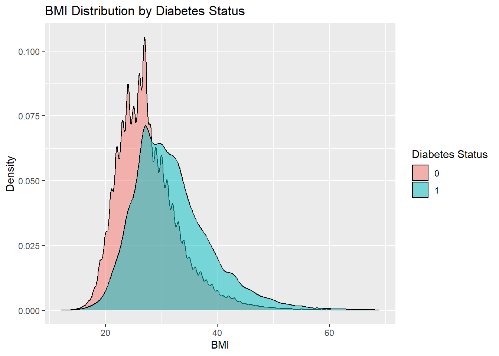

library(tidyverse)
diabetes <- read_csv("data/diabetes_binary_health_indicators_BRFSS2015.csv")
# Age, BMI, PhysActivity
summary(diabetes |> select(Diabetes_binary, Age, BMI, PhysActivity)) Diabetes_binary Age BMI PhysActivity
Min. :0.0000 Min. : 1.000 Min. :12.00 Min. :0.0000
1st Qu.:0.0000 1st Qu.: 6.000 1st Qu.:24.00 1st Qu.:1.0000
Median :0.0000 Median : 8.000 Median :27.00 Median :1.0000
Mean :0.1393 Mean : 8.032 Mean :28.38 Mean :0.7565
3rd Qu.:0.0000 3rd Qu.:10.000 3rd Qu.:31.00 3rd Qu.:1.0000
Max. :1.0000 Max. :13.000 Max. :98.00 Max. :1.0000 diabetes |>
filter(Diabetes_binary %in% c(0, 1)) |>
group_by(Diabetes_binary) |>
summarise(
BMI_mean = mean(BMI),
BMI_median = median(BMI),
BMI_sd = sd(BMI),
PhysActivity_prop = mean(PhysActivity)
)# A tibble: 2 × 5
Diabetes_binary BMI_mean BMI_median BMI_sd PhysActivity_prop
<dbl> <dbl> <dbl> <dbl> <dbl>
1 0 27.8 27 6.29 0.777
2 1 31.9 31 7.36 0.631diabetes |>
filter(Diabetes_binary %in% c(0, 1)) |>
group_by(Diabetes_binary, Age) |>
summarise(count = n(), .groups = "drop") |>
group_by(Diabetes_binary) |>
slice_max(count, n = 1) |>
select(Diabetes_binary, most_common_age_group = Age, count)# A tibble: 2 × 3
# Groups: Diabetes_binary [2]
Diabetes_binary most_common_age_group count
<dbl> <dbl> <int>
1 0 9 27511
2 1 10 6558ggplot(diabetes, aes(x = Diabetes_binary)) +
geom_bar() +
scale_x_continuous(breaks = c(0, 1)) +
labs(title = "Bar Plot of Diabetes Status",
x = "Diabetes Status",
y = "Count")
ggplot(diabetes, aes(x = Age)) +
geom_bar() +
labs(title = "Bar Plot of Age",
x = "Age Group",
y = "Count")
ggplot(diabetes, aes(x = BMI)) +
geom_histogram(binwidth = 1) +
labs(title = "Histogram of BMI",
x = "BMI",
y = "Count")
ggplot(diabetes, aes(x = PhysActivity)) +
geom_bar() +
scale_x_continuous(breaks = c(0, 1)) +
labs(title = "Bar Plot of PhysActivity",
x = "PhysActivity",
y = "Count")
ggplot(diabetes, aes(x = Age, fill = factor(Diabetes_binary))) +
geom_bar(position = "dodge") +
labs(title = "Diabetes Count by Age Group",
x = "Age Group", y = "Count", fill = "Diabetes Status") +
theme_minimal()
ggplot(diabetes |> filter(BMI < 70), aes(x = BMI)) +
geom_density(alpha = 0.5, aes(fill = factor(Diabetes_binary))) +
scale_fill_discrete(name = "Diabetes Status") +
labs(title = "BMI Distribution by Diabetes Status", x = "BMI", y = "Density")
tblPhysActivity <- table(diabetes$PhysActivity, diabetes$Diabetes_binary,
dnn = c("Physical Activity", "Diabetes"))
tblPhysActivity Diabetes
Physical Activity 0 1
0 48701 13059
1 169633 22287